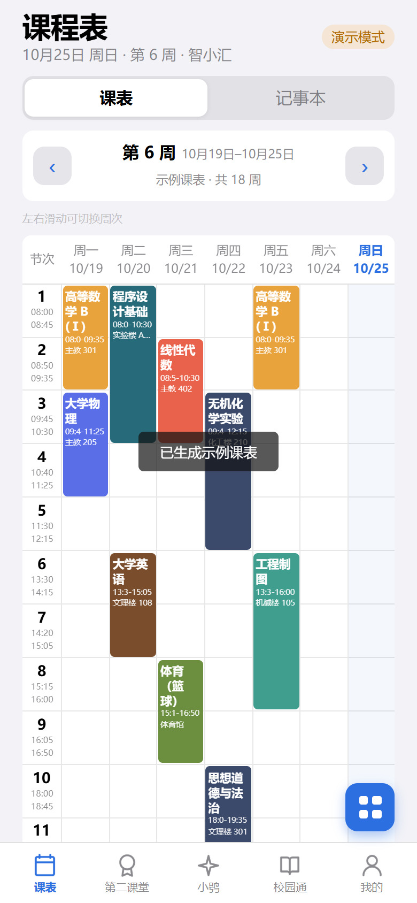
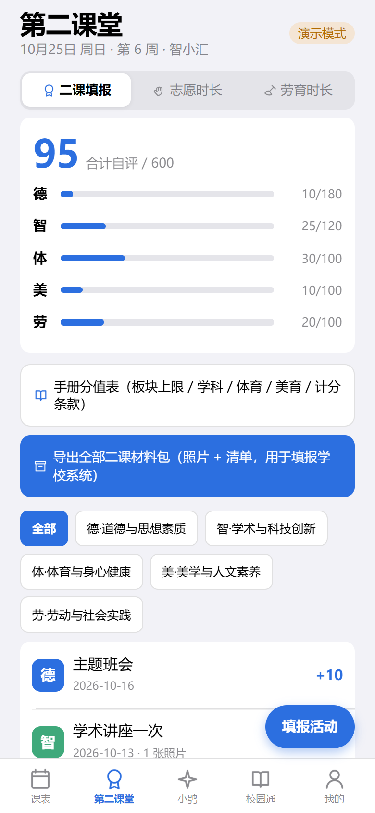
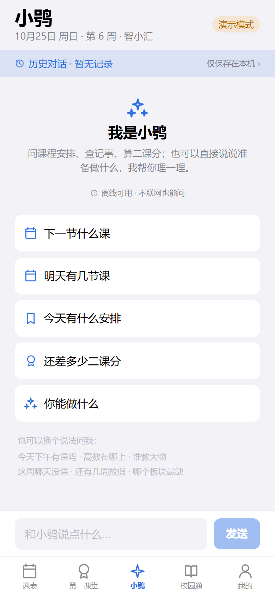
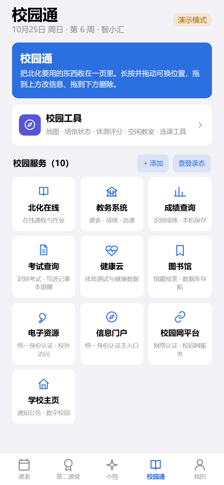
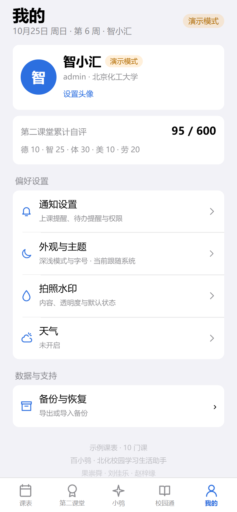
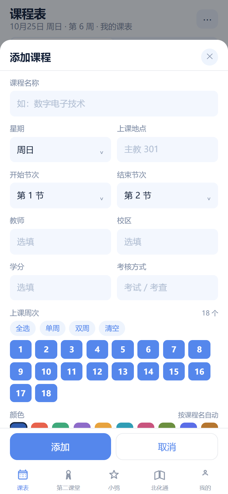
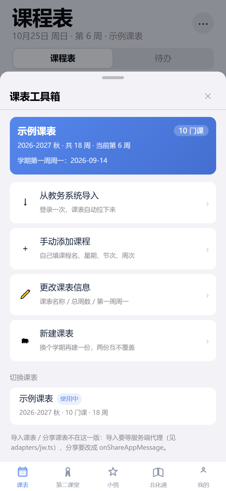
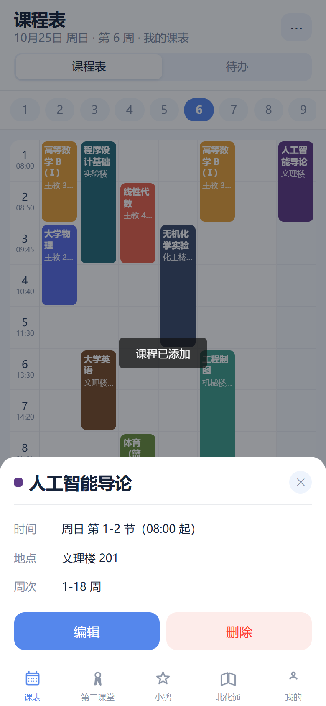
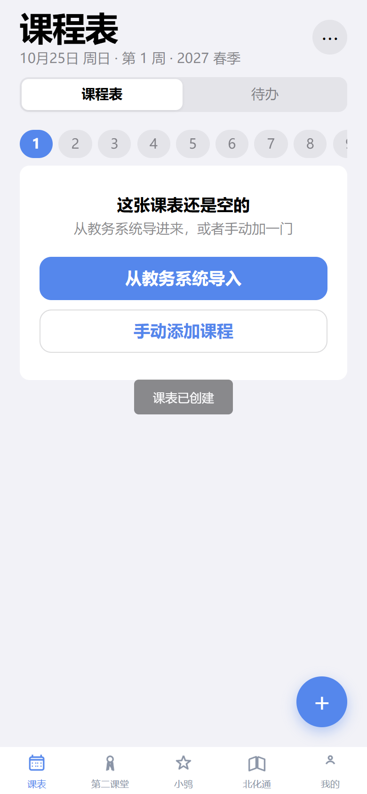

基于对 E:\Gary\北京化工大学\北化app\BaiXiaoXiao 的完整扫描，逐项给出能搬 / 要改 / 必须放弃的裁决，附可运行骨架。
① 那个文件夹里没有任何小程序相关的内容。我按「小程序 / miniprogram / uni-app / uniapp / mp-weixin / 微信小程序 / appid / wechat」逐个搜过全工程，命中 0 个。唯一的 appid 是 capacitor.config.ts 里 Android 的 com.unimate.app。所以这次不是"改小程序"，是新建小程序壳 + 把业务代码搬进去。
② 能搬的比例很高，但不是全部。18,275 行里约 70%（纯逻辑：解析器、周次算法、RSA、配色、数据模型、Markdown）几乎零改动；约 25%（28 个 .vue）需要机械替换标签与单位；剩下 5% 是 Capacitor 原生能力，搬不过去，只能重做或放弃。
③ 有一件事小程序做不到：在教务系统页面里执行自己的 JS。这是整个迁移的核心矛盾，下面第 5 节专门讲三条出路。
先把事实摆出来，后面的每个判断都能对得上号。
| 层 | 技术 | 对小程序的意义 |
|---|---|---|
| 视图 | Vue 3.5 <script setup> + scoped CSS | 可迁移 uni-app 原生支持 |
| 构建 | Vite 5 + TypeScript 5.7 | 可迁移 同一套工具链 |
| 状态 | Pinia 2（stores/db.ts 1059 行） | 可迁移 换 reactive 单例也可 |
| 路由 | 没有 vue-router，靠 db.activeTab 切视图 | 几乎不用改 这是意外的优势 |
| 原生容器 | Capacitor 6 + 10 个插件 | 不可用 全部替换 |
| 教务抓取 | 自研原生插件 JwWebView（Android WebView + evaluateJavascript） | 不可用 必须重新设计 |
| 测试 | 30 个 node --experimental-strip-types 脚本，952 条断言 | 可复用 纯函数测试直接跑 |
| API | 出现次数 | 小程序有吗 | 处置 |
|---|---|---|---|
Capacitor.* | 29 | 没有 | 换成 adapters 层 |
| WebView 相关 | ≈130 | 受限 | 教务导入整体重构 |
window.* / document.* | 28 / 23 | 没有 | 逐处替换为 uni.* |
localStorage | 17 | 等价 | uni.setStorageSync |
fetch() | 9 | 等价 | uni.request（要配白名单） |
crypto.subtle / navigator | 4 / 13 | 没有 | 纯 JS 实现（已提供） |
FileReader | 3 | 没有 | wx.getFileSystemManager |
<div> / <span> / <img> | 845 / 240 / 10 | 没有 | 改成 view / text / image |
这个工程没有用 vue-router，页面切换全靠 db.activeTab 这个数字 + v-if。这在小程序里反而更好搬 —— 它天然对应 5 个 tabBar 页，不需要重写路由。如果当初用了 createRouter + history 模式，这里就要多花两天。
三条路都有人走，但对这个工程，只有一条是省力的。
| 方案 | 能复用多少现有代码 | 改造量 | 判断 |
|---|---|---|---|
| uni-app（Vue 3 + Vite + TS） | .vue 直接复制过来，改标签和单位即可；Pinia 官方支持；.ts 纯逻辑原样跑 |
小 | 推荐 |
| Taro 4（Vue 3） | 也能用 Vue SFC，但组件库生态偏 React，Vue 侧社区资料少 | 中 | 备选 |
| 原生小程序 + TypeScript | 28 个 .vue 全部要手写成 wxml + wxss + 逻辑层，等于重写一遍 | 大 | 不划算 |
选 uni-app 的真正理由不是"名气大"，而是这三条对得上你的现状：同一门 Vue 3 语法、同一套 Vite 构建、纯 TypeScript 模块不需要任何包装。你的 zfClient.ts、parser/rules.ts、periods.ts 这类文件，进了 uni-app 就是一个 import 的事。
npm 上 @dcloudio/vite-plugin-uni 的 latest 标签停在一个 2021 年的 alpha（3.0.0-alpha-3000020210521001），直接 npm i 会报 peer 冲突。所有 @dcloudio/* 必须钉同一个版本号（骨架里已经钉好 3.0.0-5020620260917001）。这是新手第一天最容易卡住的地方。
这张表是整份指南的骨架。逐条对着改，就不会漏。
| 原能力 | 原实现 | 小程序替代 | 结论 |
|---|---|---|---|
| 页面容器 | <div> / <span> | <view> / <text> | 机械替换 |
| 页面滚动 | body 自然滚动 | <scroll-view scroll-y>，父级要给死高度 | 要改结构 |
| 路由 | db.activeTab 切视图 | pages.json + tabBar | 很省力 |
| 全局样式 | :root + CSS 变量 | page + CSS 变量 | 一行改 |
| 像素单位 | px | rpx（750 = 屏宽） | ×2 换算 |
| 本地存储 | Capacitor Filesystem + localStorage | uni.setStorageSync（10MB）/ 文件系统（200MB） | 有适配层 |
| HTTP | fetch，WebView 自动带 Cookie | uni.request，要自己管 Cookie，域名需备案+白名单 | 要写适配 |
| 加密 | crypto.subtle + @noble/* | @noble 可留；subtle/atob/TextEncoder 全要自己补 | 已补好 |
| 本地通知 | LocalNotifications + AlarmManager 精确闹钟 | 订阅消息：一次授权一条，服务端下发 | 能力降级 |
| 前台保活 / 电池优化 | 前台服务 + 心跳 + 开机恢复 | 无 | 删除 |
| 系统日历写入 | 自研原生插件 | 无（只能引导用户手动加） | 删除 |
| 相机 / 相册 | Capacitor Camera | uni.chooseImage / uni.chooseMedia | 等价 |
| 分享 | URL hash #s=<payload> + 系统分享 | onShareAppMessage + path 参数 | 重写 |
| 文件导出 | 写公共 Documents，微信可直接选 | wx.saveFileToDisk / 转发给好友 / 复制到剪贴板 | 换路径 |
| 教务页面抓取 | 原生 WebView 同源执行 JS | 做不到（容器隔离、无 Cookie、无 DOM） | 重构 |
| 字号缩放 | 原生 textZoom | 跟随微信设置，不能改 | 删除 |
| 地理定位 | Capacitor Geolocation | uni.getLocation（需在后台声明用途） | 要备案 |
这六件事覆盖了 28 个 .vue 里的绝大部分改动，属于"不需要动脑但必须做对"的活。
小程序没有 HTML 标签，写 <div> 不会报错，只会当成未知自定义组件，静默不渲染。这是最坑的一点：白屏但没报错。
<div class="card">
<div class="row">
<span class="grow">关于 Unimate</span>
<img src="/logo.png">
</div>
</div><view class="card">
<view class="row">
<text class="grow">关于 百小鸮</text>
<image src="/static/logo.png" mode="aspectFit" />
</view>
</view>注意 <text> 的行为和 <span> 不同：text 是内联但受限于父级，长文本换行、省略号行为都不一样。原来的 .grow 类在 flex 里要配合 view 用，别给 text 加 flex:1。
小程序设计宽度固定 750rpx，等于屏幕宽度。所以 1px ≈ 2rpx。你原来 font: 15px，改成 font-size: 30rpx；padding: 16px 改 32rpx。
1px 这种发丝线不能 ×2（会变成 2rpx 的粗线），border: .5px 要保留原值或改 1rpx。box-shadow 的模糊半径也不该翻倍。手动过一遍 28 个文件比脚本安全。
小程序页面本身不滚动（页面只有一屏），要滚必须用 scroll-view，而且必须给它确定的高度，否则它按内容撑开、永远不滚。
.screen { height: calc(100vh - var(--window-bottom, 0px)); display: flex; flex-direction: column; }
.scroll { flex: 1; height: 0; } /* height:0 + flex:1 是让 scroll-view 撑满剩余空间的唯一可靠写法 */| 原写法 | 问题 | 替换 |
|---|---|---|
:root { --brand: … } | 小程序没有 <html> | page { --brand: … } |
color-mix(in srgb, …) | 安卓微信内核不支持（iOS 又支持，于是"我这儿好的"） | 写死 rgba() 或预设变量 |
backdrop-filter: blur() | 安卓时灵时不灵 | 半透明底 + 实色兜底，别当关键视觉 |
Main.vue 里 background: color-mix(in srgb, var(--card) 88%, transparent) —— 在 iOS 上好看，在安卓低版本微信里会整块失效变透明，底下的课表会透上来。这类"只在部分机型坏"的 bug 最难查，迁移时一次清掉。
原来是 db.activeTab === 0 ? <TimetableView/> : … 的一串 v-else-if。小程序里拆成 5 个 page，每个 page 只保留自己那一段，pages.json 里声明 tabBar。改动是"拆"，不是"重写"。
"tabBar": {
"color": "#8A94A6", "selectedColor": "#5587EC",
"list": [
{ "pagePath": "pages/timetable/index", "text": "课表",
"iconPath": "static/tabbar/calendar.png",
"selectedIconPath": "static/tabbar/calendar-on.png" }
]
}顺带一提：原 tab 第 3 项叫「Uni」，现在叫「小鸮」；第 4 项「北化通」改成了「校园通」。最终版并没有用原生 tabBar —— 原生 tabBar 的颜色只能靠 theme.json 配，深色要再维护一份且容易漏，所以改成在页面里自绘（见第 6 节）。上面这段配置留着，是因为它解释了图标尺寸与路径约定。
这是最容易低估的一处。小程序的 uni.request 不会自动带 Cookie，也不会自动保存 Set-Cookie。而正方教务的整个登录流程就靠 Cookie 串起来。
// 一个按 host 分桶的最小 Cookie 罐 const jar = new Map<string, Map<string,string>>(); // 发请求前手工塞 Cookie，回来手工吃 Set-Cookie const cookie = cookieHeader(url); if (cookie) header['Cookie'] = cookie; uni.request({ url, header, dataType: 'text', success: (res) => { eatCookies(url, res.header?.['Set-Cookie']); }});
dataType: 'text' 这一行不能省
默认情况下框架会尝试把响应 JSON 化。正方返回的是 HTML 登录页，一旦被 JSON 化就变成 "<!DOCTYPE…" 这种被转义的字符串，你的 readHiddenFields() 正则全部失效。这个坑会表现为"提示页面结构变了"，但其实只是解析前被改写了一次。
这才是真正花时间的地方。前四节是体力活，这一节是设计活。
你的 jwwebview.ts 注册了一个原生插件，用 Android WebView 打开 jwglxt.buct.edu.cn，好处是页面在教务域名下 —— Cookie 天然带上、登录页的 jsbn RSA 加密能直接跑、抓表格一把一个准。zfimport 模式更进一步，直接在同源上下文里 fetch 课表接口拿 kbList。
小程序里这条路彻底走不通：
<web-view> 只能打开已备案 + 已登记为业务域名的页面；evaluateJavascript 的等价物都不存在。| 路线 | 怎么做 | 代价 | 推荐度 |
|---|---|---|---|
| A. 服务端代理 | 云函数/自建 Node 服务，把 zfClient.ts 的协议逻辑整份搬过去：读隐藏字段 → 按 mmsfjm 决定是否 RSA → POST 登录 → 跟 302 → 同会话请求 kbList → 只回传结构化课程 |
要一台服务器；要处理学校反爬与合规 | 首选 |
| B. 用户自助导入 | 用户在浏览器登录教务 → 导出课表 HTML/ics → 发到"文件传输助手" → 小程序 wx.chooseMessageFile 选文件解析 |
体验差一档，但零合规风险，解析器现成 | 先上线 |
| C. H5 中转 | 自建一个 H5（在你自己域名下，随便抓），小程序用 <web-view> 挂它，靠 postMessage 回传 |
需要业务域名（个人主体没有这个权限） | 企业主体可选 |
zfClient.ts 是纯函数（RSA 用的是 BigInt 手写模幂，不是 WebCrypto）。骨架里已经把它搬进来了，只换了 3 个全局函数（atob/btoa、getRandomValues、TextEncoder），并用真实 1024 位密钥做了加解密往返验证，结果字节级一致。这部分可以直接放服务端跑。
| 原方案（Android） | 小程序 | |
|---|---|---|
| 触发方式 | AlarmManager 精确闹钟，一次排一学期 | wx.requestSubscribeMessage，必须用户点击触发 |
| 授权粒度 | 一次授权永久有效 | 一次授权 = 一条消息（长期订阅仅限特定类目） |
| 下发方 | 本机直接弹 | 服务端调 subscribeMessage.send |
| 离线准点 | Doze 下也准（靠前台服务保活） | 依赖服务端定时器，且用户可能没授权 |
产品上建议这样降级：进小程序时检查今天/明天的课 → 用户点一次「开启上课提醒」→ 只订阅当天这一条 → 长周期提醒引导「添加到手机日历」。别承诺"整学期自动提醒"，做不到。
你的同步走 unimate-sync.*.workers.dev。两个问题叠在一起：① *.workers.dev 在大陆被 DNS 污染（你们 PRD 11.47 里自己也写了）；② 小程序的白名单只接受已备案域名，workers.dev 根本填不进去。Cloudflare Pages 的 *.pages.dev 同理。
所以云同步这件事，小程序版必须先把域名落到你自己备案的域上（或者直接用云开发/云函数），否则连"填白名单"这一步都过不去。
不是伪代码。baixiaoxiao-mp/ 目录已通过 npm run build:mp-weixin，主包 1.1MB。下面这些图是真实渲染结果（H5 构建 + 无头浏览器截的，UI 与小程序一致）。

课表 · 周次横条 + 课程格
第二课堂 · 学时进度
小鸮 · 离线对话
校园通 · 服务入口
我的 · 品牌卡「添加课表」在原工程里是两块东西：手动添加课程（单门课的增删改）和课表工具箱（新建/切换/改名/删除整张课表）。小程序版两块都落地了，交互按小程序的习惯重排：

课程编辑器
课表工具箱
详情 → 编辑/删除
新建课表的空态原来骨架只有一张隐式课表，课程没有归属。要做「多课表」就必须把 timetableId 补上，否则切换课表时无法过滤课程：
interface Timetable { id; name; semesterLabel; semesterStartMonday; totalWeeks } interface Course { id; timetableId; name; teacher; room; campus; day; startPeriod; endPeriod; weeks[]; weeksRaw; credit; examMode; colorIndex; colorSet }
存储键从 state/v1 升到 state/v2。首次启动若只找到 v1，会自动建一张「我的课表」并把所有课程挂上去 —— 用户感知不到迁移。这一点在小程序里尤其要注意：小程序没有"重装"这个动作，Storage 会一直留着，写错一次迁移逻辑就是永久性的。
| 细节 | 为什么这么做 |
|---|---|
| 删除按「同名 + 同星期 + 同节次」成组删 | 一门课可能被拆成多段周次（如 1-8 周和 10-16 周分两次加），逐条删会留半截 |
| 颜色按课程名哈希，手动改色会同步到同名所有时段 | 原工程真机反馈过：「高等数学」在周二和周四显示成两种颜色 |
| 撞课只提示不阻止，且同名课程不算冲突 | 同名同时段通常是多教学班/可选机房，不是真的撞课（口径来自 jwglxtBucT.ts:207） |
node scripts/e2e.mjs 实际执行（当前 31 项全过）：渲染 10 块 → 点 ＋ 填「人工智能导论」→ 保存后变 11 块 → 刷新页面仍是 11 块（验证落盘）→ 详情 → 工具箱 → 新建课表出空态 → 空表加第一门课 → 切回原课表数据完好 → 打开编辑态改名生效 → 五个 tab 逐个校验 → 深色模式生效。
这是这一版最容易被误解的地方，所以单独说明。小鸮 页看起来是聊天，但没有接任何模型 —— 它是一套跑在本机的「规则 + 你的数据」问答引擎，代码在 src/services/xiao/engine.ts。
① 使用环境不保证联网，断网也要能问；② 小程序前端放不住 API Key，抓包就能拿走；③ 课表、记事、二课分都是个人数据，不该为了回答「明天几节课」把整份课表传到别人服务器上。
所以回答全部由本机数据算出来，好处是不会编：问「下一节什么课」，它必须真的去读 db.courses；读不到就说没有。代价是覆盖面有限，因此写了 35+ 条意图，覆盖课表、课程详情、空档、记事、二课、时长、校园入口、作息、情绪这几类。
| 做法 | 解决什么问题 |
|---|---|
规则按顺序匹配，run() 返回 null 表示"认了但不该我答" | 同一条正则能覆盖多种问法，又不会互相挡住 |
PRIORITY 列表显式提权（今天概览 / 剩余课 / 哪天没课 / 校园入口 / 天气 / 提醒） | 「这周哪天没课」必须早于「这周有几节」，靠数组顺序维护太脆 |
| 课程名用字集覆盖率匹配，不是正则枚举 | 「高数」「大物」「线代」这类简称没法穷举；覆盖率 ≥0.6 且交集 ≥2 才认 |
| 「节课」按节次数统计（1-2 节算 2 节） | 中文说「几节课」指的是节次，不是课程条数 |
兜底必须诚实：答不上来就直说「这句我还没学会」，并给出能问的方向，不硬编。
node scripts/unit-xiao.mjs 把引擎单独打包、mock 掉 uni.* 后在 Node 里跑：空课表引导 2 项、精确意图 20 项、课程名匹配 7 项、记事/二课/校园通 15 项、通用 8 项、口语化泛问 62 条，另有 4 条"必须答不上"的反例（「web3 是什么」这类）。合计 60 个断言全过。
src/adapters/platform.ts平台判定 / 状态栏高度 / toast / confirmsrc/adapters/storage.tsStorage 版 io.ts，保留 unimate: 键前缀src/adapters/request.tsuni.request + 手写 Cookie 罐 + dataType:'text'src/adapters/crypto.tsbase64 / UTF-8 / SHA-256 / 随机数，全部纯 JSsrc/adapters/notify.ts订阅消息封装 + 服务端排期接口形状src/adapters/jw.ts教务导入三条路线的接口与说明src/shared/zfClient.ts原样搬入，只换 3 个全局函数src/shared/periods.ts节次时间 + 18 色课程配色（原样）src/stores/app.ts多课表 + 课程 CRUD + 周次/冲突计算src/services/xiao/engine.ts小鸮的离线对话引擎：35+ 意图，答案全从本机数据算src/components/CourseEditor.vue添加 / 编辑课程弹层src/components/TimetableSheet.vue课表工具箱：改信息 / 新建 / 切换 / 删除scripts/e2e.mjs13 项交互冒烟（H5 产物上跑，不进小程序包）cd baixiaoxiao-mp && npm install && npm run dev:mp-weixin
微信开发者工具 → 导入项目 → 选 dist/dev/mp-weixin → AppID 选「测试号」。
不要一次搬完。每期都有一个"能给别人看"的产出，出问题能停下。
uni-app 工程、5 个 tabBar 页、adapters 层、品牌色与 logo 全套、构建通过。
课表页已完整落地：网格、周次、课程增删改、多课表、空态、持久化。还剩 SecondClassView / MeView 两个页面的完整 UI（现在只是骨架）。
本机存储随 P1 一起做完了。这一期只剩导入：用 wx.chooseMessageFile 走「用户自助导入」，把 parser/jwglxtBuct.ts 的 HTML 表格解析搬过来。
把 zfClient.ts 放服务端，写登录 + kbList 抓取；小程序只发学号密码、拿回课程。密码不落库。
建模板 → 用户点一次订阅 → 服务端定时下发。分享改成 onShareAppMessage + path 参数带课表。
类目、隐私协议、服务器域名、隐私接口声明。见第 9 节。
「Unimate → 百小鸮」不是全文替换。我扫了一遍，70 处可改、3 处绝对不能改。
全部是用户看得见的文案和注释，改了对功能零影响：
MeView.vue '请在系统设置中允许 Unimate 发送通知' → '请在系统设置中允许 百小鸮 发送通知' Login.vue '请登录/注册您的 Unimate 账号' → '请登录/注册您的 百小鸮 账号' main.ts 'Unimate — 高校校园学习生活一站式智能助手' → '百小鸮 — 北化校园学习生活助手'
| 位置 | 是什么 | 改了会怎样 |
|---|---|---|
syncCrypto.tsAAD_PREFIX = 'Unimate/P3/v1/' |
AES-GCM 的附加认证数据 | 已同步的加密包全部认证失败，谁也解不开，包括你自己 |
backup.tsapp: 'Unimate' ×2 + manifest.app !== 'Unimate' |
备份文件的格式标识（不是给人看的名字） | 已导出的 .unimate.zip 全部恢复不了 |
localStorage 键前缀 unimate:（改了 = 老用户本地数据读不到）、__unimateBack（安卓返回键钩子）、com.unimate.app（包名，改了就变成另一个 App，不能覆盖升级）。这三类建议一律不动：品牌是给用户看的，标识符不是。
scripts/rename-brand.mjs 已经把这些雷区写进白名单了。默认只预览不改文件：
node scripts/rename-brand.mjs # 预览：70 处 / 32 文件 / 跳过 3 处协议常量 node scripts/rename-brand.mjs --apply # 真改（自动备份到 .brand-backup-时间/）
我在 E:\Gary\…\BaiXiaoXiao 下跑 git status 得到的是 fatal: not a git repository。这意味着改错了没有 undo。所以：① 先 git init && git add -A && git commit（十分钟的事，能救命）；② 或者只跑预览，确认后加 --apply，脚本会自动留一份备份。
另外我没在这台机器上跑你的 30 个测试脚本（工程没装 node_modules），所以改名后请自己 npm i && npm test 复核。
这一段不是吓唬人，是提审最常见的退回原因。
| 问题 | 现实情况 | 建议 |
|---|---|---|
| 主体类型 | 个人主体不能选「教育」相关类目，也没有业务域名和 web-view 权限 | 要挂学校服务入口 / web-view，必须企业或事业单位主体 |
| 类目选择 | 「教育-教育服务」需要办学资质；纯查课表工具通常报「工具-效率」 | 先按「工具」报，别硬蹭教育类目 |
| 抓取教务数据 | 未经学校授权批量获取学生教务数据，属于高风险项；被学校投诉会直接下架 | 优先走「用户自助导入」（路线 B）；要自动抓取，最好先跟教务处报备 |
| 收集学号密码 | 小程序要求最小必要原则；明文/可逆存储账号密码是明确红线 | 密码只在内存过一手，登录完即弃；不写日志、不进备份 |
| 服务器域名 | 必须 HTTPS + 已备案 + 80/443 标准端口；不接受 IP、不接受非标端口 | workers.dev / pages.dev 全部要换 |
| 隐私协议 | 涉及位置、相册、文件，都要在「用户隐私保护指引」里逐项声明并说明用途 | 拍照水印 = 相册权限，天气 = 位置权限，都要写 |
<div> 不报错，只是不显示。白屏优先查标签名，不是查逻辑。scroll-view 不给高度就不滚。父级 flex + height:0 是唯一稳的写法。uni.request 默认会把响应 JSON 化。抓 HTML 必须 dataType:'text'，否则正则全废。atob/btoa/TextEncoder/subtle。你的 RSA 和 SHA-256 都依赖它们，必须补纯 JS 版。@dcloudio 的 latest 是 2021 年的 alpha。所有包钉同一版本号。color-mix() 在安卓微信失效。你现在 tabbar 就在用。-webkit-line-clamp 钳行 + 单节不显示地点。public/sample-timetable.html 有 146KB、PRD.md 有 583KB —— 别把文档目录打进包。E:\Gary\…\BaiXiaoXiao 里 git init 并提交一次。没版本控制就动 32 个文件，风险不对称。node scripts/rename-brand.mjs，看清楚 70 处在哪，再决定要不要 --apply。cd baixiaoxiao-mp && npm i && npm run dev:mp-weixin，用开发者工具导入 dist/dev/mp-weixin，先在真机上滑一遍课表、点右下角 ＋ 加一门课 —— 你会立刻发现哪些样式思路在小程序里不成立。先做 P1（只读页面）再动教务。因为 P1 会暴露所有样式与结构问题，而这些问题跟教务一毛钱关系没有；等页面稳了，再去啃服务端代理这个唯一的硬骨头。
build:mp-weixin（主包 1.1MB）· 交互冒烟 13/13 · 纯逻辑层已用真实密钥做过加解密往返验证